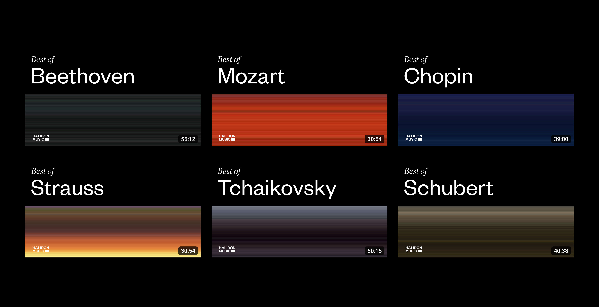
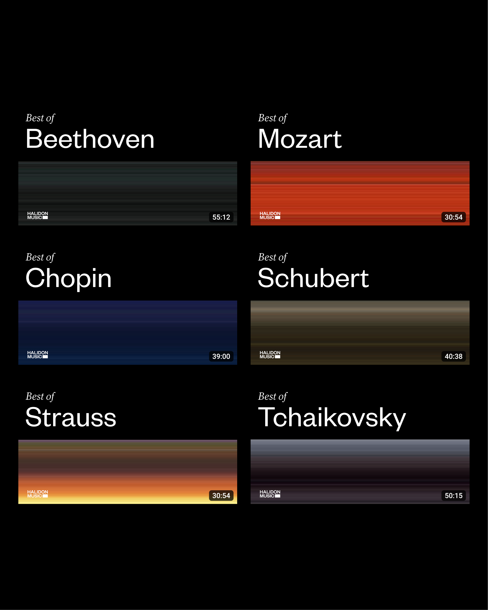

Branding, Layout Design, Motion Design
Halidon is an independent Italian record company that distributes classical music collections on Youtube.
While Halidon excels in the quality of their content, being well appreciated by its fans, it's not the only player to do so, especially on YouTube.
For this reason a cliched communication could heavily undermine its ability to stand out appropriately among its competitors.
That's why I designed a visual system to express the channel uniqueness while being capable of adapting to the variaety of their content.
The project includes new covers for their collections, including those dedicated to the great classical composers (the so-called "Best of" covers), and in addition generative visuals to be implemented in the videos so as to provide listeners with a more complete audiovisual experience.
The line serves as a metaphor for sound, especially notes, repetitive entities, always the same. But it is precisely from the union of the different notes, or lines, that it becomes possible to create extraordinary symphonies.

